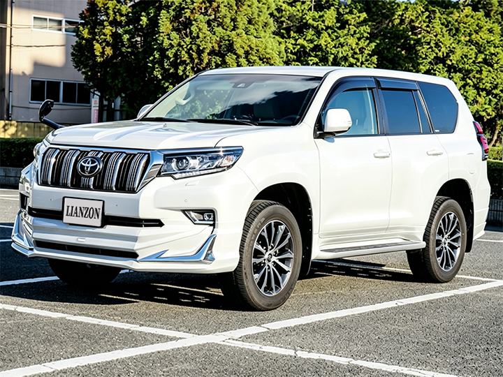

SUV
SUV familiaux et professionnels
SUV d’occasion recherchés selon l’année, la finition, le budget et la destination souhaités.
Image for reference. Availability, condition and price depend on the specific vehicle and must be confirmed in a written quotation.Demander un devis